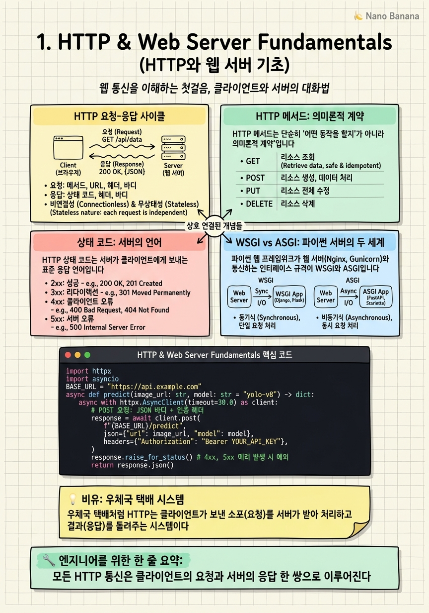

HTTP & Web Server Fundamentals

🎯 학습 목표
- HTTP 요청이 브라우저에서 서버까지 전달되는 전체 흐름을 설명할 수 있다
- GET, POST, PUT, DELETE, PATCH의 의미 차이를 실제 사례로 구분할 수 있다
- 상태 코드 2xx/3xx/4xx/5xx 각각이 의미하는 바를 정확히 안다
- WSGI와 ASGI의 차이를 이해하고 AI 서비스에 ASGI가 왜 유리한지 설명할 수 있다
- HTTP 헤더가 인증·캐싱·콘텐츠 협상에 어떻게 쓰이는지 안다
백엔드 개발을 처음 배울 때 가장 먼저 마주치는 것은 HTTP입니다. AI 모델을 아무리 잘 만들어도, 그것을 외부 세계와 연결하는 통로가 HTTP이기 때문에 이 프로토콜을 이해하지 않으면 아무것도 배포할 수 없습니다. 이 챕터는 HTTP가 무엇인지, 어떻게 동작하는지를 브라우저 주소창에 URL을 입력하는 순간부터 서버가 응답을 돌려보내는 순간까지 단계별로 추적합니다.
HTTP는 HyperText Transfer Protocol의 약자로, 텍스트 기반의 요청-응답 프로토콜입니다. 클라이언트(브라우저, 모바일 앱, Python의 requests 라이브러리)가 서버에 요청을 보내면, 서버는 처리 후 응답을 돌려줍니다. 이 단순한 구조 위에 전 세계 웹이 돌아갑니다.
AI 엔지니어에게 HTTP는 특히 중요합니다. 모델 추론 서버, 데이터 파이프라인 API, MLflow 같은 실험 추적 도구, 그리고 Kubernetes의 헬스체크까지 — 모두 HTTP를 사용합니다. 이 챕터를 마치면 curl 명령 한 줄로 어떤 서버든 디버깅할 수 있게 됩니다.
핵심 내용
HTTP 요청-응답 사이클
브라우저에 https://api.example.com/predict를 입력하면 어떤 일이 벌어질까요? 먼저 DNS 조회가 일어납니다. DNS(Domain Name System)는 도메인 이름을 IP 주소로 변환하는 전화번호부입니다. api.example.com → 203.0.113.42 같은 식으로 변환됩니다.
IP 주소를 얻은 뒤 TCP 연결이 수립됩니다. HTTP/1.1까지는 매 요청마다 새 TCP 연결을 맺는 것이 기본이었지만, HTTP/1.1의 keep-alive와 HTTP/2부터는 하나의 연결을 재사용합니다. HTTPS라면 TLS 핸드셰이크가 추가됩니다.
TCP 연결이 수립되면 클라이언트는 HTTP 요청 메시지를 전송합니다. 이 메시지는 요청 라인(메서드 + 경로 + HTTP 버전), 헤더(키-값 쌍), 빈 줄, 바디(선택적)로 구성됩니다. 서버는 요청을 처리한 뒤 상태 라인(HTTP 버전 + 상태 코드 + 상태 메시지), 헤더, 빈 줄, 바디로 구성된 응답을 보냅니다.
HTTP 메서드: 의미론적 계약
HTTP 메서드는 단순히 "어떤 동작을 할지"가 아니라 의미론적 계약입니다. 서버와 클라이언트가 서로의 의도를 오해하지 않도록 하는 규약이죠.
GET = 리소스를 조회한다. 서버 상태를 바꾸지 않는다(멱등성 보장). 브라우저가 뒤로가기를 눌러도 안전하게 재요청할 수 있습니다.
POST = 새 리소스를 생성하거나 서버에 데이터를 처리 요청한다. 멱등성이 없습니다. 같은 요청을 두 번 보내면 두 개의 레코드가 생성될 수 있습니다.
PUT = 리소스를 완전히 교체한다. 멱등성이 있습니다. 같은 요청을 열 번 보내도 결과는 동일합니다.
PATCH = 리소스의 일부만 수정한다. PUT과 달리 변경할 필드만 보냅니다. AI 서빙에서 모델의 threshold만 바꾸고 싶을 때 유용합니다.
DELETE = 리소스를 삭제한다. 멱등성이 있습니다(이미 없는 리소스를 삭제해도 결과는 동일).
상태 코드: 서버의 언어
HTTP 상태 코드는 서버가 클라이언트에게 보내는 표준 응답 언어입니다. 5가지 카테고리가 있습니다.
2xx — 성공
200 OK: 요청 성공, 응답 바디에 결과가 있음201 Created: 리소스 생성 성공,Location헤더에 새 리소스 URL이 있음204 No Content: 성공했지만 응답 바디가 없음 (DELETE 후 자주 사용)
3xx — 리다이렉션
301 Moved Permanently: 영구 이동, 클라이언트가 북마크를 업데이트해야 함302 Found: 임시 이동304 Not Modified: 캐시가 유효함, 바디 없이 헤더만 전송
4xx — 클라이언트 오류
400 Bad Request: 요청 형식이 잘못됨401 Unauthorized: 인증이 필요함 (토큰 없음 또는 만료)403 Forbidden: 인증은 됐지만 권한이 없음404 Not Found: 리소스가 없음422 Unprocessable Entity: FastAPI에서 유효성 검사 실패 시 반환429 Too Many Requests: Rate limit 초과
5xx — 서버 오류
500 Internal Server Error: 서버 내부 오류 (예외 처리 안 된 경우)502 Bad Gateway: 프록시 서버가 업스트림에서 잘못된 응답 수신503 Service Unavailable: 서버 과부하 또는 유지보수 중
WSGI vs ASGI: 파이썬 서버의 두 세계
파이썬 웹 프레임워크가 웹 서버(Nginx, Gunicorn)와 통신하는 인터페이스 규격이 WSGI와 ASGI입니다.
WSGI(Web Server Gateway Interface) 는 Python 2.5 시절(2003년)에 정의된 동기 인터페이스입니다. 요청 하나를 처리하는 동안 스레드 전체가 블로킹됩니다. Django, Flask가 이 방식을 사용합니다. CPU를 많이 쓰는 작업(이미지 처리, 행렬 연산)에는 적합하지만, 수천 개의 동시 연결을 처리하기 위해선 스레드 또는 프로세스를 늘려야 합니다.
ASGI(Asynchronous Server Gateway Interface) 는 Python의 asyncio를 기반으로 한 비동기 인터페이스입니다. 단일 스레드가 I/O 대기 시간 동안 다른 요청을 처리할 수 있습니다. FastAPI, Starlette이 이 방식을 사용합니다.
AI 서빙 서버에 ASGI가 유리한 이유가 있습니다. 모델 추론 요청은 GPU 연산이 끝날 때까지 기다리는 I/O 바운드 작업입니다. ASGI를 쓰면 GPU가 추론하는 동안 CPU는 다른 요청의 전처리·후처리를 할 수 있어 처리량이 크게 증가합니다. Triton Inference Server, vLLM이 모두 비동기 처리를 핵심으로 설계된 이유가 여기 있습니다.
HTTP 헤더의 실전 활용
헤더는 HTTP 메시지의 메타데이터입니다. 바디에 담기지 않는 제어 정보를 전달합니다.
인증 관련 헤더
Authorization: Bearer <token> 형태로 JWT 토큰을 전달합니다. API 키는 보통 X-API-Key: <key> 형태의 커스텀 헤더로 전달합니다.
콘텐츠 협상 헤더
Content-Type: application/json은 바디가 JSON 형식임을 알립니다. Accept: application/json은 클라이언트가 JSON 응답을 원한다는 의사 표시입니다. AI 서버에서 이미지를 업로드할 때는 Content-Type: multipart/form-data를 사용합니다.
캐싱 헤더
Cache-Control: max-age=3600은 응답을 1시간 동안 캐시해도 된다는 의미입니다. ETag는 리소스의 버전 식별자로, 클라이언트가 If-None-Match 헤더로 조건부 요청을 보내 서버가 304를 반환하면 대역폭을 아낄 수 있습니다.
CORS 헤더
Access-Control-Allow-Origin: *는 어떤 도메인에서도 이 API를 호출할 수 있다는 의미입니다. 브라우저가 다른 도메인의 API를 호출할 때 CORS 정책이 적용되므로, FastAPI 등에서 반드시 설정해야 합니다.
💡 비유로 이해하기
HTTP 요청-응답을 이해하는 가장 좋은 비유는 우체국 택배입니다. 클라이언트는 택배를 보내는 사람, 서버는 택배를 받는 물류 창고입니다.
택배 상자(HTTP 요청)에는 받는 주소(URL), 운송 방법(HTTP 메서드: 일반 배송/빠른 배송/반품), 내용물(바디), 그리고 겉면에 붙어 있는 스티커들(헤더: 냉동 보관 필요, 취급 주의, 결제 완료 확인서)이 있습니다.
물류 창고(서버)는 택배를 받으면 상태 스티커를 붙여 돌려보냅니다. 200 OK는 "정상 수령했습니다.", 404 Not Found는 "해당 상품이 창고에 없습니다.", 503 Service Unavailable은 "오늘 창고 화재로 운영이 불가합니다." 상태 코드는 물류 창고가 보내는 표준 응답 언어입니다.
💻 코드 예시
Python의 httpx 라이브러리로 비동기 HTTP 요청을 보내고, 응답의 상태 코드·헤더·바디를 직접 다루는 예제입니다. AI 서버에 예측 요청을 보내는 클라이언트 코드를 작성합니다.
import httpx
import asyncio
BASE_URL = "https://api.example.com"
async def predict(image_url: str, model: str = "yolo-v8") -> dict:
async with httpx.AsyncClient(timeout=30.0) as client:
# POST 요청: JSON 바디 + 인증 헤더
response = await client.post(
f"{BASE_URL}/v1/predict",
json={"image_url": image_url, "model": model},
headers={
"Authorization": "Bearer my-secret-token",
"Content-Type": "application/json",
"X-Request-Id": "req-001", # 디버깅용 커스텀 헤더
},
)
# 상태 코드에 따른 분기 처리
if response.status_code == 200:
return response.json()
elif response.status_code == 422:
# FastAPI 유효성 검사 실패: 어떤 필드가 문제인지 확인
raise ValueError(f"Validation error: {response.json()}")
elif response.status_code == 429:
# Rate limit: Retry-After 헤더에 재시도 대기 시간이 있음
retry_after = response.headers.get("Retry-After", "60")
raise RuntimeError(f"Rate limited. Retry after {retry_after}s")
else:
response.raise_for_status() # 나머지 4xx/5xx는 예외 발생
async def main():
result = await predict("https://example.com/dog.jpg")
print(result)
if __name__ == "__main__":
asyncio.run(main())httpx.AsyncClient는 비동기 HTTP 클라이언트로, requests의 비동기 버전입니다. async with 구문으로 연결 풀을 자동으로 관리합니다. timeout=30.0은 30초 내에 응답이 없으면 예외를 발생시킵니다. 상태 코드별 분기 처리가 핵심입니다 — 특히 429의 경우 Retry-After 헤더를 읽어 적절한 대기 후 재시도해야 합니다.
🏭 현업에서의 평가
✅ 시니어가 보는 것
- PUT과 PATCH의 차이를 설계 맥락에서 설명할 수 있는가
- 401과 403을 혼동하지 않고 각각 언제 반환해야 하는지 아는가
- CORS 오류를 브라우저 콘솔에서 보고 서버 설정으로 해결한 경험이 있는가
- Rate limiting 구현 시 `Retry-After` 헤더를 포함하는지 아는가
⚠️ 레드 플래그
- POST와 GET을 "데이터 보낼 때" vs "데이터 가져올 때"로만 구분하는 경우
- 401과 403을 같은 의미로 사용하는 경우
- HTTP/2나 HTTPS의 동작 원리를 전혀 모르는 경우
🎤 예상 인터뷰 질문
- 사용자가 로그인했지만 관리자 페이지에 접근하면 어떤 상태 코드를 반환해야 하나요? (401 vs 403)
- AI 추론 API에서 처리 시간이 오래 걸릴 때 클라이언트 타임아웃 문제를 어떻게 해결하시겠어요?
- 같은 POST 요청이 네트워크 오류로 두 번 전송됐을 때 중복 처리를 어떻게 방지하나요? (Idempotency Key)
✨ 핵심 요약
요청-응답 사이클
모든 HTTP 통신은 클라이언트의 요청과 서버의 응답 한 쌍으로 이루어진다.
메서드는 계약
GET·POST·PUT·PATCH·DELETE는 서버와 클라이언트 간의 의미론적 약속이다.
상태 코드 패밀리
2xx 성공, 4xx 클라이언트 오류, 5xx 서버 오류를 구분할 줄 알아야 디버깅이 가능하다.
ASGI = AI 서버의 선택
비동기 ASGI(FastAPI/Starlette)는 GPU 추론 대기 시간 동안 CPU가 다른 요청을 처리해 처리량을 높인다.
헤더는 메타데이터
인증·캐싱·콘텐츠 협상은 헤더로 제어된다. 바디만 보면 헤더를 놓친다.
CORS는 브라우저 정책
CORS 오류는 브라우저가 발생시키는 것이지 서버 버그가 아니다. 서버에서 허용 헤더를 설정해야 한다.
curl로 디버깅
`curl -v` 옵션은 요청·응답 헤더 전체를 보여준다. 모든 HTTP 이슈의 첫 번째 디버깅 도구다.